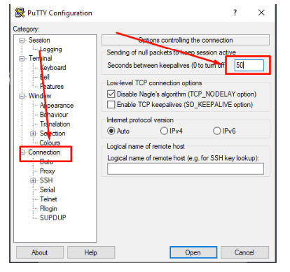

نحوه اتصال پروکسی MTProto برای تلگرام — راهنمای مرحله به مرحله
MTProto برای تلگرام محبوبترین پروکسی برای کار بدون وقفه پیامرسان است. این پروکسی پروتکل رسمی تلگرام است.
در این راهنمای ۳ مرحلهای یاد میگیرید که چگونه به سرعت پروکسی MTProto را برای تلگرام روی سرور اجارهای نصب کرده و آن را به پیامرسان خود متصل کنید.
الزامات نصب پروکسی MTProto برای تلگرام
حداقل الزامات
- سیستمعامل: Ubuntu 20.04 / 22.04 (نصب تمیز)
- سرور (VPS): ۱ هسته، ۵۱۲ مگابایت رم — این مقدار کافی است
- دسترسی SSH (روت یا کاربر دارای sudo)
- پورت باز ۴۴۳ (برای استتار به عنوان HTTPS لازم است)
کل این راهنما بر اساس مثال ارائهدهنده Aeza ساخته شده است. میتوانید از هر ارائهدهنده دیگری که اجاره سرورهای VPS در اروپا را ارائه میدهد استفاده کنید.
و حالا شروع میکنیم:
مرحله ۱ — اجاره سرور خارجی و اتصال به آن
در Aeza.net ثبتنام کنید و از منوی سمت چپ، گزینه افزودن سرویس را انتخاب کنید (به تصویر نگاه کنید، با رنگ قرمز زیر خط کشیده شده). در مرکز، موقعیت مکانی را انتخاب کنید، اروپا با قیمت ۵.۹۳ یورو را جستجو کنید؛ در تصویر به عنوان مثال وین انتخاب شده است.
در سمت راست بررسی کنید که پشتیبانگیری (backup) غیرفعال باشد، لازم نیست، در تصویر با مستطیل مشخص شده است. تمدید خودکار به دلخواه.
کمی به پایین اسکرول کنید و روی Ubuntu 20.04 / 22.04 سوییچ کنید؛ به طور پیشفرض 26.04 قرار دارد که هنوز خام است، تغییر آن الزامی است!
نیازی به نصب چیز دیگری نیست، یک سیستمعامل تمیز لازم است.

اجاره سرور در پنل Aeza
سپس روی پرداخت کلیک کنید. پرداخت از کارتهای روبلی تا ارزهای دیجیتال امکانپذیر است.
پس از پرداخت، از ۲ تا ۱۵ دقیقه باز میشود و از طریق ایمیل اطلاعرسانی میشود. سپس از منوی چپ به تب سرویسهای من بروید:

تب "سرویسهای من" در پنل Aeza
و روی نام سرور کلیک کنید، با رنگ قرمز زیر خط کشیده شده. پنجرهای با اطلاعات ورود باز میشود، به تصویر نگاه کنید.

اطلاعات سرور: IP، نام کاربری، رمز عبور
اطلاعات به این شکل خواهد بود:
- ip: 86.163.135.43 (IP سرور شما متفاوت خواهد بود);
- نام کاربری: root (اغلب نام کاربری همین است);
- رمز عبور: E7D4sF3csSjg (رمز عبور سرور شما متفاوت خواهد بود);
برای پیکربندی سرور به دسترسی به خود سرور با اطلاعات (نام کاربری، رمز عبور و آدرس IP) نیاز دارید، بنابراین ذخیره آنها مهم است. همه این کارها از کامپیوتر انجام میشود (روی گوشی تست نکردم، شاید ممکن باشد، در نظرات بنویسید)، تحت Windows یا MacOS.
در ویندوز به یک برنامه ویژه نیاز دارید، دارندگان MacOS از ترمینال داخلی استفاده میکنند.
و حالا شروع میکنیم:
Windows — برنامهای برای اتصال به سرورمان دانلود و نصب کنید: به https://www.putty.org/ بروید، دانلود و نصب کنید. پس از نصب، یک میانبر روی دسکتاپ ظاهر میشود، آن را اجرا کنید، همانطور که در تصویر نشان داده شده است.

نصب و اجرای Putty در ویندوز
به سرورمان متصل شوید، IP سرور، پورت ۲۲ را وارد کنید و روی Open کلیک کنید، همانطور که در تصویر زیر نشان داده شده است.

اتصال به سرور از طریق Putty
سپس به تب Connection بروید و در خط اول در فیلد ورودی هر عددی از ۲۰ تا ۵۰ وارد کنید، مثلاً ۵۰، همانطور که در تصویر نشان داده شده است.

تنظیم پارامترهای Connection در Putty
روی Open کلیک کنید
هنگامی که برای اولین بار وارد سرور میشوید، باید در پنجرهای که ظاهر میشود روی Accept کلیک کنید. سپس در پنجره بعدی به ترتیب نام کاربری و رمز عبور را وارد کنید و هر بار Enter را فشار دهید.
توجه! هنگام وارد کردن رمز عبور، کاراکترها روی صفحه نمایش داده نمیشوند، این طبیعی است. برای چسباندن رمز عبور کپیشده — کافی است یک بار روی کلیک راست ماوس در پنجره احراز هویت روی پسزمینه مشکی کلیک کنید و سپس Enter را فشار دهید، به تصویر نگاه کنید.
وارد کردن نام کاربری و رمز عبور در Putty
در صورت اتصال موفق، بارگذاری اطلاعات سیستم انجام میشود و دعوتی برای ارسال دستورات به سرور شما ظاهر میشود. در مثال زیر — این دعوت در آخرین خط است و به این شکل است — root@TESTVDS:~# این خط به این معنی است که سرور آماده دریافت و اجرای دستورات شما است.

اتصال موفق به سرور
همه چیز عالی است، اتصال برقرار شد، کمی پایینتر بروید، ادامه دستورالعمل برای MacOS است. هرچند توصیه میکنم دستورالعمل را ارزیابی کنید و لذت استفاده از مکها را درک کنید.
MacOS — اگر مک دارید، از ترمینال داخلی استفاده میکنیم، زیرا نیازی به نصب برنامههای جانبی برای یک بار ورود چند دقیقهای به سرور نیست.
بنابراین، در Launchpad در جستجو کلمه Terminal یا ترمینال را وارد کنید، این را میبینید

جستجوی ترمینال در MacOS
ترمینال را باز کنید، دستور را وارد کنید و Enter را فشار دهید
ssh ваш_логин@IP-адрес_сервера
یعنی اگر نام کاربری من root و IP سرور 79.137.202.97 باشد، دستور در ترمینال این خواهد بود
ssh root@79.137.202.97
سپس رمز عبور را وارد کنید، Enter را فشار دهید، تمام.
در صورت اتصال موفق باید مانند تصویر شود — root@نام سرور.

اتصال به سرور از طریق ترمینال MacOS
مرحله ۲ — پیکربندی سرور پروکسی MTProto برای تلگرام
سپس باید فقط یک دستور وارد کنید و Enter را فشار دهید:
sudo apt update && sudo apt upgrade -y && sudo apt install docker.io ufw -y && sudo ufw allow OpenSSH && sudo ufw allow 443/tcp && sudo ufw --force enable && SECRET=$(docker run --rm nineseconds/mtg:2 generate-secret --hex google.com) && docker run -d --name mtg --restart=always -p 443:443 nineseconds/mtg:2 simple-run -n 1.1.1.1 -i prefer-ipv4 0.0.0.0:443 "$SECRET" && echo "✅ ГОТОВАЯ ССЫЛКА: tg://proxy?server=$(curl -s ifconfig.me)&port=443&secret=$SECRET"
دستور به طور کامل، بدون فاصله، همانطور که هست وارد میشود. در طول نصب سؤالی پرسیده میشود، باید پاسخ دهید — yes. سپس ۳ یا ۴ پنجره ظاهر میشود، همانطور که در تصویر زیر نشان داده شده است، باید Enter را وارد کنید، چهار بار.

درخواست تأیید نصب
نتیجه نصب یک سرور اروپایی آماده با پروکسی MTProto برای تلگرام خواهد بود. به تصویر زیر نگاه کنید.

پروکسی MTProto آماده روی سرور
تمام، در این مرحله نصب کامل شد.
این دستور چه کاری انجام میدهد و چه چیزی روی سرور شما نصب میکند:
- لیست بستهها را بهروزرسانی میکند
- همه بهروزرسانیهای سیستم را نصب میکند
- ابزار curl را نصب میکند
- Docker به طور خودکار نصب میشود
- پروکسی MTProto روی پورت ۴۴۳ پیکربندی میشود
- فناوری Fake TLS فعال میشود — استتار به عنوان HTTPS معمولی
- کلید مخفی تولید میشود
همه اینها ۱–۲ دقیقه طول میکشد. فقط صبر کنید.
سپس لینک کامل تلگرام را کپی کنید — tg://proxy?server=194.33.35.192&port=443&secret=ee3a44c56ab55a1a368eb3b260a2550432676f6f676c652e636f6d
و آن را به شکلی که در تصویر نشان داده شده درآورید

دادههای اتصال پروکسی در Telegram
مراقب باشید! سرور = اعداد، پورت = اعداد، رمز = کل رشته به هم ریخته!
این دادهها را برای خود به گوشی بفرستید یا کد QR را اسکن کنید. میتوانید با خیال راحت ۵۰ تا ۷۰ دستگاه را متصل کنید و حتی از این راه درآمد کسب کنید.
مرحله ۳ — اتصال پروکسی MTProto برای تلگرام
به منوی تنظیمات بروید و بخش — دادهها و حافظه را پیدا کنید، همانطور که در تصویر نشان داده شده است و روی این گزینه کلیک کنید.

منوی "دادهها و حافظه" در Telegram
سپس در پنجره بعدی به پایین اسکرول کنید و گزینه — تنظیم پروکسی را پیدا کنید، به تصویر نگاه کنید.

گزینه "تنظیم پروکسی" در Telegram
روی آن کلیک کنید و وارد پنجره تنظیمات پروکسی خود میشوید

پنجره تنظیمات پروکسی در Telegram
دادههای آمادهشده را وارد کنید، همانطور که در تصویر بالا نشان داده شده است. آدرس سرور، پورت و کلید مخفی. باید موارد زیر را ببینید:

اتصال پروکسی در Telegram
تلگرام خود را روی گوشی یا کامپیوتر اجرا کنید. باید اتصال برقرار شود و تلگرام کار کند. ممکن است در اولین اتصال چند دقیقه طول بکشد تا چتها بهروزرسانی شوند.

تلگرام در حال کار از طریق پروکسی MTProto
نتیجهگیری
شما با موفقیت هر ۳ مرحله را گذراندید:
- ✅ یک VPS در Aeza اجاره کردید
- ✅ پروکسی MTProto را با یک دستور نصب کردید
- ✅ لینک را دریافت کردید و Telegram را متصل کردید
اکنون شما پروکسی MTProto خصوصی خود را برای Telegram دارید — پایدار، سریع و امن.
سؤالات متداول
۱. آیا میتوان MTProto را روی Windows نصب کرد؟
بله، اما دستورالعمل پیچیدهتر است. برای سادگی و پایداری بهتر است از Ubuntu روی VPS استفاده کنید.
۲. پروکسی چقدر ترافیک مصرف میکند؟
تقریباً تمام ترافیک به شما بستگی دارد — چقدر در Telegram میگذرانید. معمولاً بیش از ۲-۳ گیگابایت در ماه نیست.
۳. چگونه پروکسی را حذف کنم؟
روی سرور اجرا کنید:
docker stop mtproto-proxy && docker rm mtproto-proxy
۴. آیا باید هر ماه سرور را تمدید کنم؟
بله، این اجاره است. اگر تمدید نکنید — پروکسی قطع میشود. Telegram به سادگی متصل نمیشود و شما به اینترنت معمولی بدون پروکسی برمیگردید.
امیدوارم توانسته باشم نحوه اتصال MTProto برای تلگرام را توضیح دهم.
نظر بگذارید
سؤال بپرسید، تجربه یا پیشنهادات خود را به اشتراک بگذارید
همه نظرات قبل از انتشار بررسی میشوند.